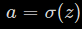
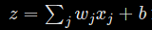
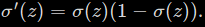

Most of the things about Neural Networks which I've learned about Neural Nets is because of Michael Nielsen's amazing Neural Networks And Deep Learning Book which I highly recommend everyone interested in Deep Learning to read. The code is mostly borrowed from Chapter 3 of that book.
How de wo learn things? I mean that is an awe-strikingly broad question very intelligent humans have been asking themselves from a very long time. But the question is there a pattern to how fast we'll adapt to something in our nature i.e. learn something?
Well look at it this way. Imagine you are teaching about numbers to a nursery boy. After lesson one you find that 8 out of 10 times he got confused b/w a 'one' and a 'seven' and that 4 out of 10 times he was confused b/w a 'six' and a 'nine'.
After this lesson, you'll probably recognize the boy's mistakes and try to emaphasize the differences in numbers in which the kid is confused. After Lesson 2 you do another evaluation and find that, 2 out of 10 times he got confused b/w a 'one' and a 'seven' and that 3 out of 10 times he was confused b/w a 'six' and a 'nine'.
Well this behaviour is generally common in all humans not just kids. If we are badly wrong about something, we learn much faster than we are less badly wrong about something. We also might see that after a month or so, kid is totally able to differentiate between a 'seven' and a 'one', but still occasionally find it hard to differentiate between a 'six' and a 'nine'.
So now the question is, does the cost function we have been using till now provide us with this feature. Let's See.
Actually the Mean Square Cost Function we have been using till now doesn't provide us with this feature. To show this Michael did a simple experiment which depicts this shortcomming of MSE cost function very clearly.
So what he desired to do was, to train a single neuron to output 0 when input was one. That's pretty simple. He chose random intial weight 0.6 and random initial bias 0.9. So the initial output of the neuron is 0.82 which is pretty far off. After some training,
So yeah, that's pretty reasonable, that's what we were expecting. It now outputs 0.09 which is still far from 0 but yes, its reasonable. So now, we are going to try something just a little bit different. Now if we chose starting bias and weight both to be 2.0, the initial output is 0.98 which is even worse than the previous case.
Let's how the training went,
Hold on, this is pretty unexpected! In fact, it's just contrary to the human behaviour. We learn more faster when we are more badly wrong but this shows contrary results. When initial output was 0.82 learning was much easier than when initial output was 0.98.
Now we need to figure out what's wrong with the MSE cost function and fix it.
To understand the origin of the problem, consider that our neuron learns by changing the weigths and a bias at a rate determined by the partial derivatives of the cost function, and So saying 'learning is slow' is really same as saying that those partial derivatives are small.
Now we'll have to figure out why those partial derivatives are small. To understand that, let's compute the partial derivatives. So our cost function is,
This is the MSE Cost function in its standard notation, let's just simplify it a bit.
Yeah, here it is. Now below is a simple snap of derivation of snap and .
Putting x = 1 and y = 0 in the above calculated gradients would give us these equations.
To understand the behaviour of these equations let's look more closely at the term in both the equations. So here's the sigmoid activation function.
From the above graph we can clearly see that when the neuron's output get close to 1, becomes very small. And hence it, makes and very small. And this is the very origin of the learning slowdown.
Introducing The Cross Entropy Cost Function
I think it's pretty clear now where the problem lies, it's in the cost function. The derivative of the cost function w.r.t. weights and biases should not contain the term, otherwise learning slowdown will continue to occur. And hence, very smart people in AI developed a new cost function which solves this problem, The Cross Entropy Cost Function. Let's look at it in more detail.
To understand the cross-entropy, let's move a little away from our super-simple toy model. We'll suppose instead that we're trying to train a neuron with several input variables, x1,x2,…, corresponding weights w1,w2,…, and a bias, b:
The output from the neuron is ofcourse,  where  is the weighted sum of the inputs. We define the cross-entropy cost function for this neuron by
where n is the total number of items in the training data, the sum is over all training inputs x, and y is the corresponding desired outputs.
Now while looking at this expression, we will see that it satisfies two most obvious properties of a cost function i.e. it must always ouptut positive value and when calculated value is close to the ouput, cost should be close to zero. Summing up, the cross-entropy is positive, and tends toward zero as the neuron gets better at computing the desired output, y, for all training inputs, x. That's two properties we would expect a cost function to have. And hence, these properties are satisfied mean square error too but cross entropy solves the problem of learning slowdown too. To see how cross entropy solves this problem, let's compute the partial derivatives of the cross-entropy cost with respect to the weights. We substitute into the cross-entropy equation and then apply the chain rule.
Putting everything over a common denominator and simplifying this becomes:
Now using the definition of sigmoid, and a little algebra we can show that, 
Using above results, we will see that cancels the denominator and our equation simplifies to this beautiful expression,
Well, what's so beautiful about this expression? The beauty lies in the fact that the rate at which weights learn depends upon , i.e. by the error in the output. The larger the error, the faster the neurons learn. This is just what we'd wanted the whole time. In particular it avoids the learning slowdown caused by the term unlike the MSE cost function. Actually, the cross-entropy cost function was intentionally chosen so to remove the term.
Very similarly, we can calculate the partial derivative of the cost function with respect to the bias and we'll see again that it stills avoids the learning slowdown issue as it no more contains the term.
After implementing the cross entropy cost function, Michael again ran it on the toy example which gave learning slowdown earlier. Initial weights and biases were chosen to be 2.0 as before and initial output was 0.98.
Clearly, cross entropy has solved the learning slowdown issue. That is what we wanted, neurons to learn faster when they are badly wrong.
Note, the activations from the final layer of the network don't usually form a probablity distribution. So it's not really correct to think of the final activations as a probablity distribution. We should use softmax activation in the last layer if we want to achieve a probablity distribution as an ouptut but here we'll keep using a sigmoid activation function for all the layers in the network.
When should we use the cross-entropy instead of the quadratic cost? In fact, the cross-entropy is nearly always the better choice, provided the output neurons are sigmoid neurons. To see why, consider that when we're setting up the network we usually initialize the weights and biases using some sort of randomization. It may happen that those initial choices result in the network being decisively wrong for some training input - that is, an output neuron will have saturated near 1, when it should be 0, or vice versa. If we're using the quadratic cost that will slow down learning. It won't stop learning completely, since the weights will continue learning from other training inputs, but it's obviously undesirable.
In the last chapter, when we derived the equations of the backpropagation, we derived them specifically for the case when we were using mean square error as the cost function. Now when we want to use the cross entropy cost function we will have to make a few changes. In particular, this one equation
We will have to derive this again for the cross entropy cost function.
Hence, we can see now
What if we decide to have linear neurons in the last layer of the network. In that case, It would be better if we use a mean square error cost function in that case rather than the cross entropy cost function as MSE will remove the learning slowdown issue in this case. You can easily prove it by using chain rule.
To understand mathematically, how the cross entropy cost function cam e into existence you can download this PDF file which contains the proof.
In further posts in this series we will understand concepts like regularization and weight initializations so to further improve the performance of our neural network. And then we will implement all those concepts into a working model.


 term in both the equations. So here's the sigmoid activation function.
term in both the equations. So here's the sigmoid activation function.